Guía paso a paso para principiantes: instala OpenStack (DevStack) en una EC2 del Sandbox de AWS Academy, abre Horizon, lanza una instancia y destruye el laboratorio al final
Arquitectura en la Nube · Universidad de la Costa (CUC) · Ingeniería de Sistemas · 2026-2 Individual · Se hace en el Sandbox de AWS Academy
Sigue los pasos en orden, de arriba abajo, sin saltarte ninguno. Vas a crear una máquina virtual (EC2) en el Sandbox de AWS Academy, instalar OpenStack dentro de ella, lanzar una mini máquina (CirrOS) y controlarla desde Horizon, el panel web de OpenStack.
Antes de empezar: necesitas el navegador y el curso de AWS Academy abierto. Al final (sección E) debes destruir el laboratorio; si no lo haces, se sigue gastando crédito.
0Qué vas a construir
OpenStack es la plataforma de nube open source: los mismos conceptos de EC2, VPC, Security Groups y Elastic IP que ya viste, ahora en una nube privada propia. Todo corre dentro de una sola VM EC2 del Sandbox de AWS Academy.
En AWS Academy abre tu curso de Arquitectura en la Nube.
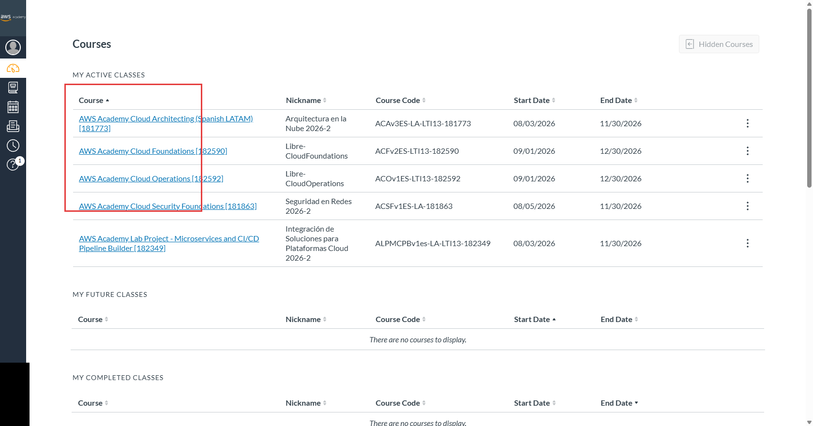
A1 · Muestra: la lista de cursos activos de AWS Academy. Marca en rojo: la columna de cursos activos. Tu curso es «AWS Academy Cloud Architecting (Spanish LATAM)», cuyo apodo es «Arquitectura en la Nube 2026-2».
A2 · Módulos y Sandbox
Dentro del curso, abre Módulos. Busca el módulo Entorno de pruebas: en este curso así se llama el Sandbox. Ábrelo.
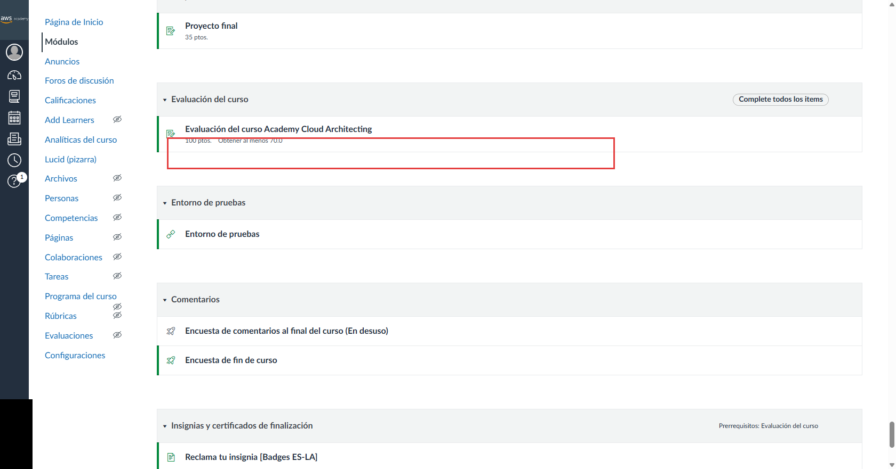
A2 · Muestra: el menú Módulos del curso con sus bloques. Marca en rojo: el bloque «Evaluación del curso». Ojo: el módulo correcto es «Entorno de pruebas» (el Sandbox), justo debajo del recuadro, sin marcar.
A3 · Start Lab
En la barra superior del laboratorio pulsa Start Lab (a la derecha, con el triángulo ▶) y espera unos segundos.
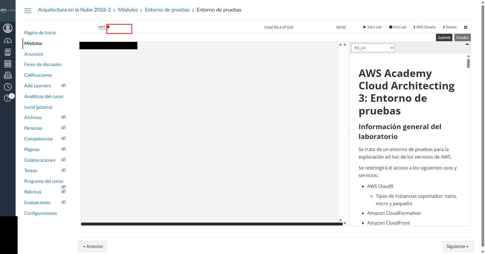
A3 · Muestra: la barra del laboratorio con el indicador AWS en rojo antes de iniciar. Marca en rojo: el indicador AWS (rojo, sin iniciar). Ojo: el botón correcto es Start Lab, arriba a la derecha, sin marcar.
A4 · Indicador AWS en verde
Espera a que el indicador AWS se ponga verde. Si está gris o en amarillo, espera; no sigas todavía.
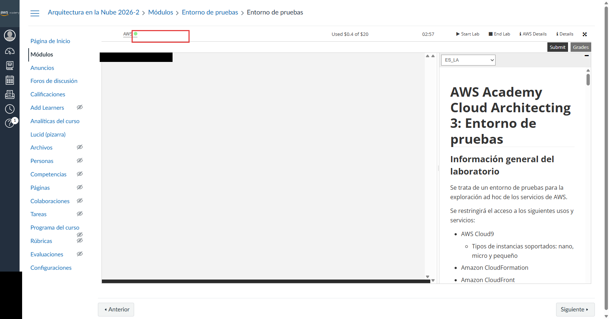
A4 · Muestra: el indicador AWS ya en verde, con el cronómetro en marcha. Marca en rojo: el indicador AWS en verde.
A5 · Abrir la consola de AWS
Haz clic en AWS, el enlace junto al indicador verde. Se abre la consola de AWS (en una pestaña nueva). Desde ahí harás la sección B.
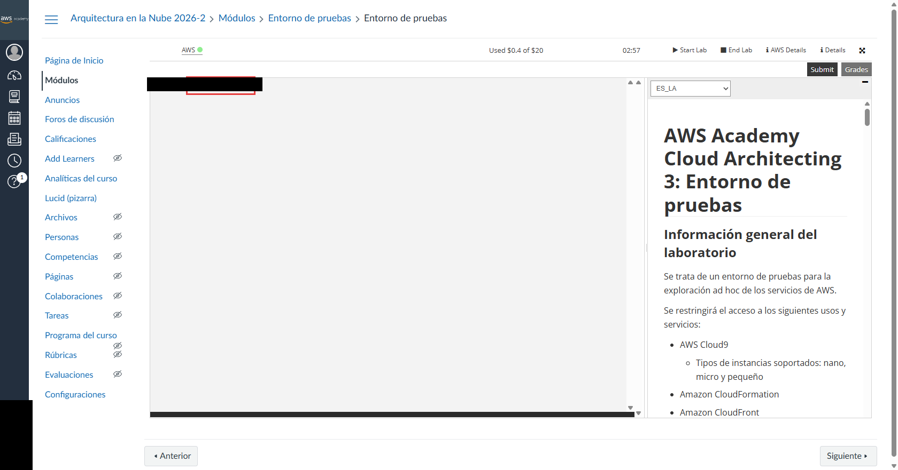
A5 · Muestra: la terminal del laboratorio con el prompt de la instancia del laboratorio. Marca en rojo: el prompt de la terminal del laboratorio. Ojo: el enlace correcto es AWS, junto al indicador verde (arriba). La marca cae en la terminal.
En la barra de búsqueda de la consola de AWS escribe EC2 y abre el servicio EC2.
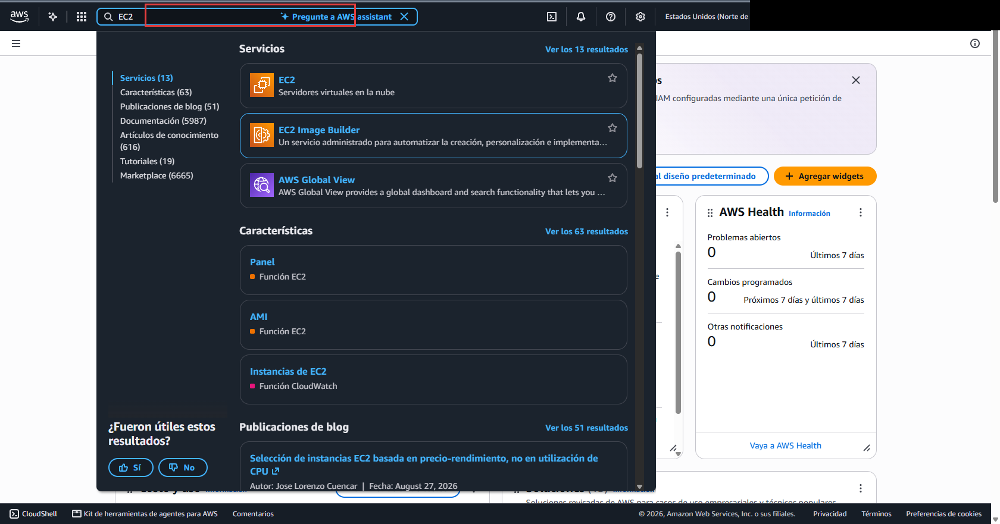
B1 · Muestra: la barra de búsqueda de la consola con EC2 escrito y la lista de resultados. Marca en rojo: la barra de búsqueda con EC2.
B2 · Lanzar la instancia
En el panel de EC2 pulsa Lanzar la instancia (Launch instance).
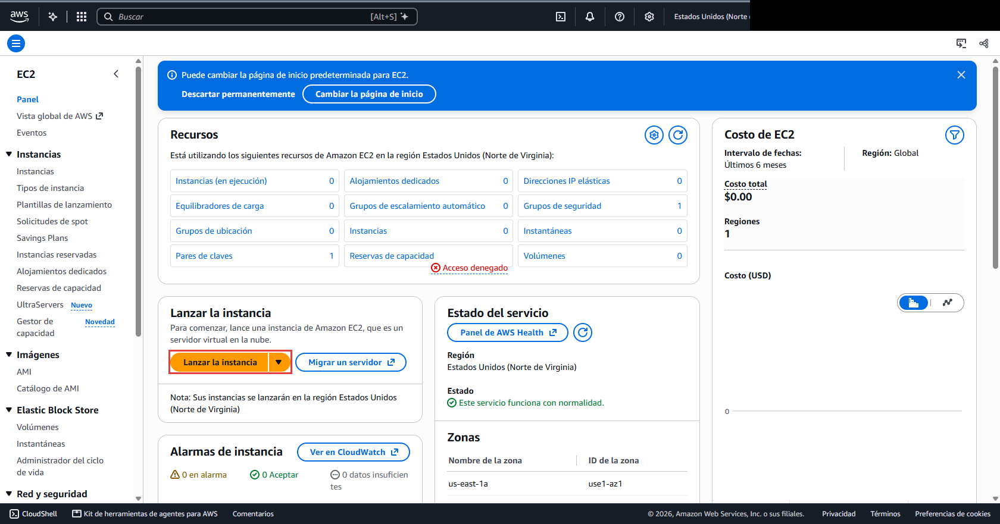
B2 · Muestra: el panel de EC2 con el botón Lanzar la instancia. Marca en rojo: el botón Lanzar la instancia.
B3 · Nombre openstack-lab
En Nombre (Name) escribe exactamente openstack-lab. Luego sigue con la imagen (AMI), más abajo.
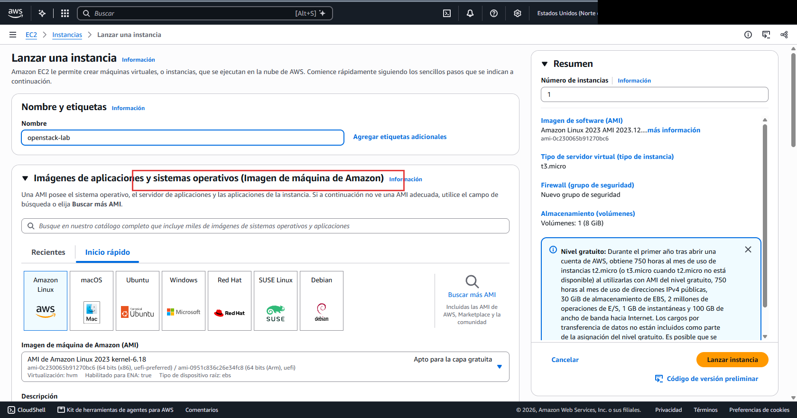
B3 · Muestra: el formulario con el campo Nombre en openstack-lab y la sección de imágenes (AMI). Marca en rojo: el encabezado de la sección de imágenes (AMI). Ojo: el campo correcto es Nombre (arriba), que ya dice openstack-lab; la marca cae en el encabezado de AMI.
B4 · Imagen Ubuntu Server 24.04
En Imágenes de aplicaciones y sistemas operativos (AMI) busca y elige Ubuntu Server 24.04 LTS (HVM), SSD Volume Type, arquitectura 64 bits (x86).
Importante: la versión debe ser exactamente 24.04 LTS. La lista puede mostrar por defecto Ubuntu 26.04: no la uses. El script de instalación solo funciona con 24.04 y se detiene con cualquier otra versión.
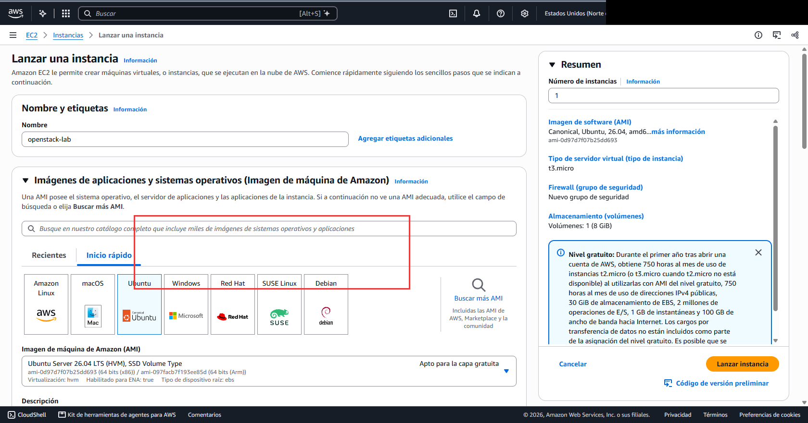
B4 · Muestra: la zona de búsqueda de AMI y el inicio rápido con Ubuntu. Marca en rojo: la zona de inicio rápido con Ubuntu. Ojo: la imagen muestra Ubuntu Server 26.04 LTS. Ese no sirve: elige Ubuntu Server 24.04 LTS (HVM), SSD Volume Type, 64 bits (x86).
B5 · Tipo t3.medium
En Tipo de instancia elige t3.medium.
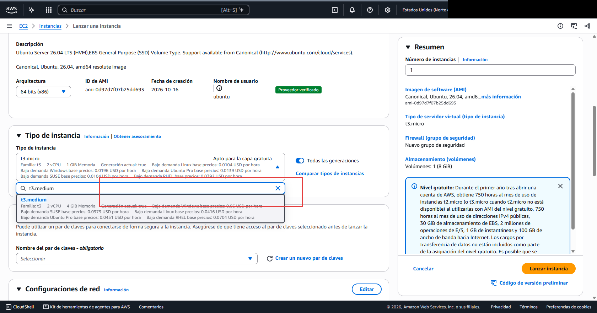
B5 · Muestra: la lista de búsqueda del tipo de instancia con t3.medium. Marca en rojo: el resultado t3.medium en la lista. Ojo: el resumen de la derecha dice t3.micro: elige t3.medium de la lista y comprueba que el resumen cambie.
B6 · Par de claves vockey
En Par de claves (inicio de sesión) elige vockey.
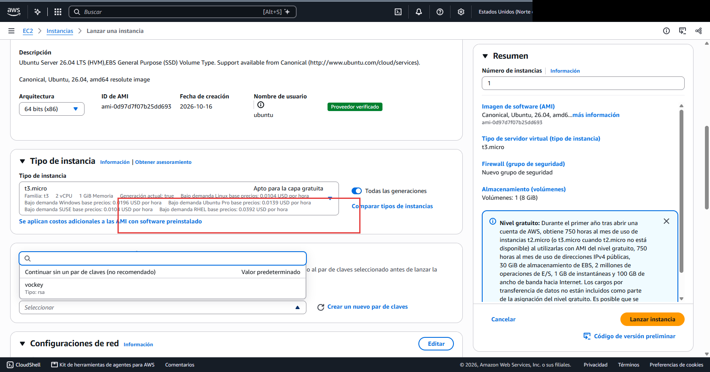
B6 · Muestra: la lista de pares de claves desplegada, con vockey como opción. Marca en rojo: el recuadro sobre la sección Tipo de instancia. Ojo: el par correcto es vockey, en la lista desplegable (sin marcar). La marca cae en la sección Tipo de instancia.
B7 · Grupo de seguridad nuevo
En Firewall (grupos de seguridad) elige Crear un grupo de seguridad (un grupo nuevo) y agrega solo estas tres reglas de entrada. Origen: 0.0.0.0/0 en todas.
Tipo
Puerto
Origen
SSH
TCP 22
0.0.0.0/0
HTTP
TCP 80
0.0.0.0/0
TCP personalizado
TCP 6080
0.0.0.0/0
No uses el grupo «default» y no agregues la regla «Todo el tráfico»: abre la instancia a todo el mundo.
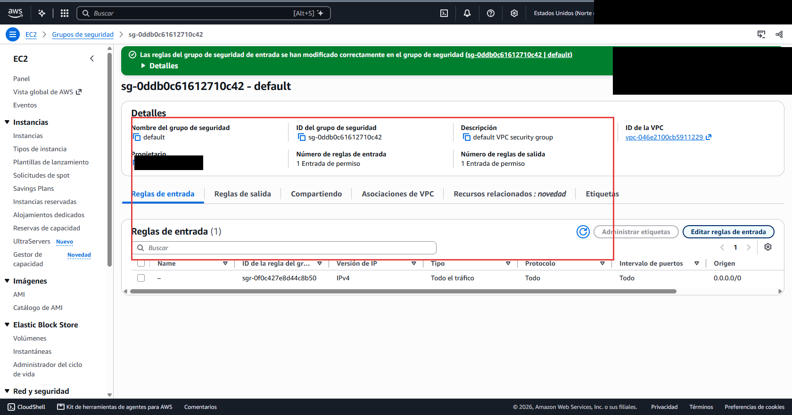
B7 · Muestra: el detalle del grupo de seguridad «default» con su regla de entrada. Marca en rojo: el detalle del grupo «default» y su regla de entrada. Ojo:no copies esta configuración: el grupo «default» tiene una regla de todo el tráfico. Crea un grupo nuevo con solo SSH 22, HTTP 80 y TCP 6080 desde 0.0.0.0/0.
B8 · Almacenamiento 35 GiB gp2
En Configurar almacenamiento cambia el volumen raíz a 35 GiB y el tipo de volumen a gp2.
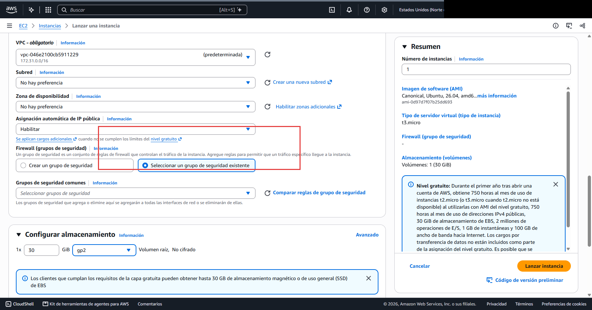
B8 · Muestra: la sección Firewall y el almacenamiento del volumen raíz. Marca en rojo: la opción Seleccionar un grupo de seguridad existente. Ojo: el volumen aparece en 30 GiB: debes poner 35 GiB y tipo gp2. Y el botón correcto es Crear un grupo de seguridad (no el existente).
B10 · Lanzar
Pulsa Lanzar la instancia (botón naranja del resumen, a la derecha). Debe aparecer el mensaje verde Correcto.
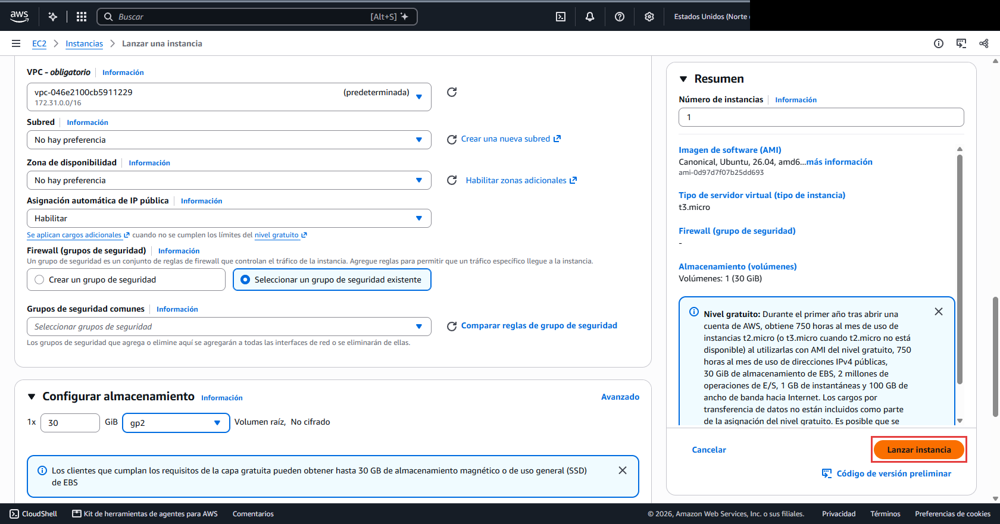
B9 · Muestra: el resumen de la derecha con el botón Lanzar la instancia. Marca en rojo: el botón Lanzar la instancia del resumen. Ojo: la instancia aparece como t3.micro: usa t3.medium.
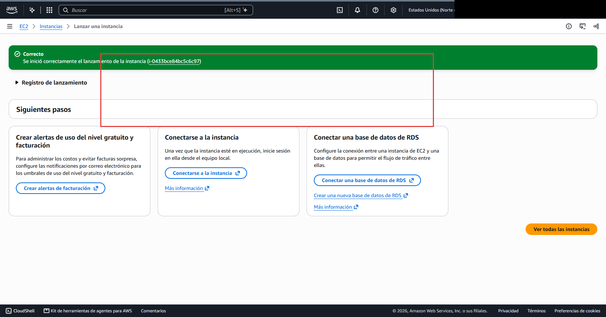
B10 · Muestra: el mensaje verde Correcto con el ID de la instancia. Marca en rojo: el mensaje verde Correcto (recuadro sobre el banner).
B11 · Running y 2/2
Vuelve a la lista de instancias (EC2 → Instancias). Espera a que el Estado de la instancia diga En ejecución (Running) y la Comprobación de estado diga 2/2.
La EC2 está lista, pero OpenStack todavía se está instalando en segundo plano. Eso tarda entre 30 y 60 minutos. Sigue con la sección C.
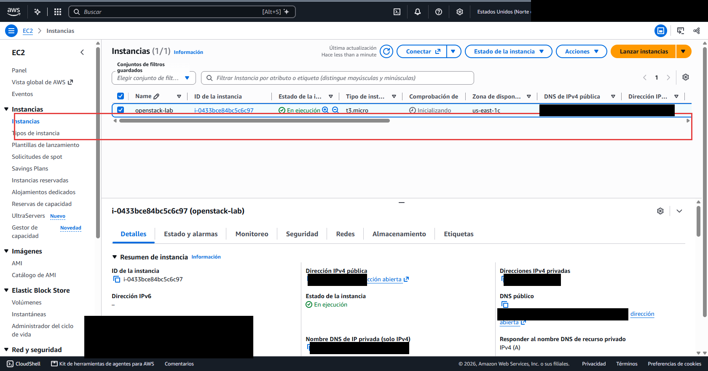
B11 · Muestra: la lista de instancias con la fila de openstack-lab en ejecución; la comprobación aún dice «Inicializando». Marca en rojo: la fila de openstack-lab (recuadro). Ojo: la imagen muestra t3.micro y comprobaciones «Inicializando». Usa t3.medium y espera a que diga 2/2.
CEntrar a la terminal y seguir la instalación
📍 Dónde estás: EC2 → Instancias → Conectar → EC2 Instance Connect (y luego la terminal)
C1 · Conectarse con EC2 Instance Connect
Marca la casilla de openstack-lab → Conectar (Connect) → pestaña EC2 Instance Connect.
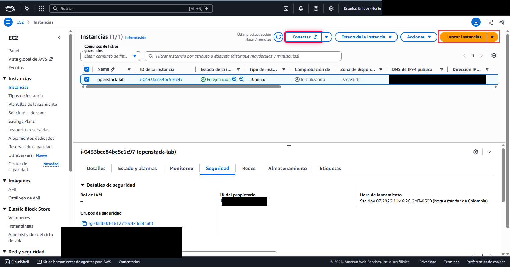
C1 · Muestra: la lista de instancias con openstack-lab seleccionada. Marca en rojo: el botón Conectar (también aparece marcado Lanzar instancias). Ojo: la instancia muestra t3.micro: en el paso B elegiste t3.medium. El botón correcto es Conectar.
C2 · Confirmar y abrir la terminal
Comprueba que el Nombre de usuario sea ubuntu y pulsa Conectar (botón naranja, abajo a la derecha). Se abre la terminal: verás un texto que empieza con ubuntu@. Ahí se escriben los comandos.
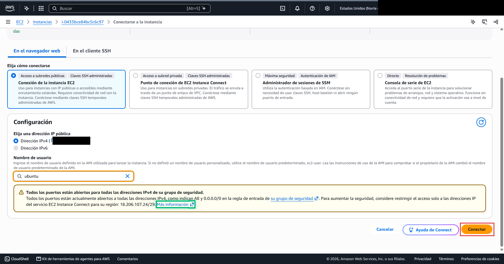
C2 · Muestra: la pantalla EC2 Instance Connect con el usuario ubuntu escrito. Marca en rojo: el botón Conectar final.
C3 · Instalar OpenStack
En la terminal copia y pega estos tres comandos, uno por uno:
La instalación tarda unos 30–40 minutos y verás muchas líneas pasar. No cierres la pestaña. Si se corta la conexión, vuelve a conectarte (C1) y escribe tmux attach -t lab para ver de nuevo la instalación.
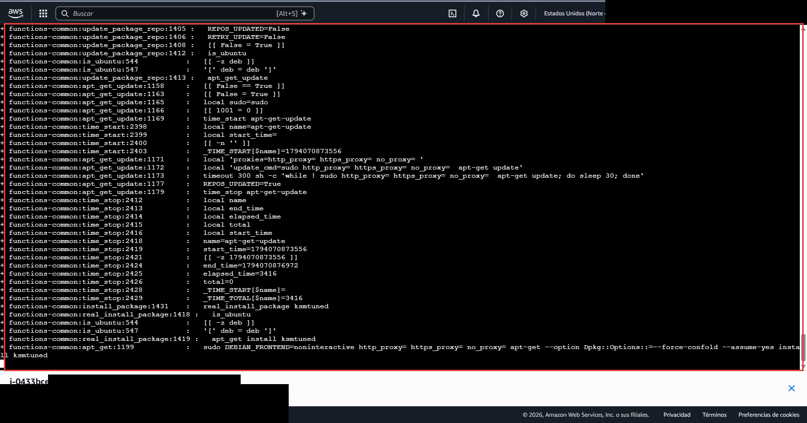
C3 · Muestra: la salida de la terminal con las líneas de progreso de DevStack (functions-common). Marca en rojo: la salida de la terminal. Ojo: la captura no muestra el comando tail -f ~/devstack-install.log: escríbelo tú en la terminal como indica el paso.
C4 · Instalación terminada
Sabrás que terminó cuando el log deja de avanzar y su última línea empieza por [OK] y dice Recursos creados. Pulsa Ctrl + C para salir de la vista.
Si la última línea es [ERROR], no sigas: ve a la sección F.
C5 · Ver las credenciales
Para ver la dirección de Horizon, el usuario y la clave, ejecuta:
cat /home/ubuntu/devstack-credenciales.txt
No compartas la clave ni la subas a un documento público.
DEntrar a Horizon y lanzar una instancia CirrOS
📍 Dónde estás: Horizon (en el navegador, con la IP pública) → Proyecto → Compute → Instancias
D1 · IP pública
En EC2 → Instancias, selecciona openstack-lab y en la pestaña Detalles copia la Dirección IPv4 pública.
D2 · Iniciar sesión en Horizon
Abre en el navegador la dirección http://<IP-pública>/dashboard. La primera línea de devstack-credenciales.txt trae la dirección exacta. Escribe:
Dominio: Default
Usuario: admin
Clave: la línea Clave de tu archivo
Si el navegador fuerza HTTPS o bloquea la página, escribe http:// al inicio de la dirección y prueba en una ventana de incógnito.
D3 · Vista general
En el menú de la izquierda ve a Proyecto → Compute → Visión general. Verás las cuotas de cómputo.
D4 · Lanzar la instancia CirrOS
Ve a Compute → Instancias y pulsa Lanzar instancia. El asistente tiene pestañas; complétalas así:
Pestaña
Qué elegir
Detalles
Nombre: vm-tunombre
Origen
Imagen cirros (Crear nuevo volumen: No)
Sabor
m1.tiny
Redes
lab-net
Grupos de seguridad
lab-ssh-icmp
Par de claves
lab-key
Lanza una sola instancia. El Sandbox permite hasta 9 y pasarte suspende tu cuenta del laboratorio.
D5 · Instancia activa y IP flotante
Espera a que el Estado sea Activo y la Energía sea En ejecución (puede tardar varios minutos). Luego, en el menú de la instancia (▾) elige Asociar IP flotante, pulsa + para asignar una dirección del grupo public y pulsa Asociar. Anota la IP flotante: la usarás en D8.
D6 · Grupo de seguridad
Abre la instancia y revisa la pestaña Grupos de seguridad: debe mostrar lab-ssh-icmp con la regla SSH (22) y la regla ICMP.
D7 · Consola noVNC
Abre la instancia, pestaña Consola → Haz clic aquí para mostrar solo la consola. Inicia sesión con usuario cirros y la contraseña que muestra el banner de la consola. Cuando estés dentro, ejecuta:
ip a
D8 · SSH a CirrOS desde la EC2
Vuelve a la terminal de EC2 (paso C2). Cambia <IP-flotante> por la IP que anotaste en D5 y ejecuta:
La primera vez pregunta si confías en el host: escribe yes. Dentro de CirrOS ejecuta hostname y ip a, y luego exit para volver a la terminal de EC2.
EDestruir el laboratorio (obligatorio)
📍 Dónde estás: EC2 → Instancias → Estado de la instancia; luego AWS Academy → Sandbox → End Lab
No lo omitas. Una instancia encendida consume el crédito del laboratorio aunque no la uses. Destrúyela siempre al terminar.
E1 · Terminar la instancia
En EC2 → Instancias, selecciona openstack-lab → Estado de la instancia (Instance state) → Terminar instancia (Terminate instance).
E2 · Confirmar
En la ventana de confirmación pulsa Terminar (Terminate).
E3 · Estado Terminated
Espera un minuto y revisa que Estado de la instancia diga Terminated. Una instancia terminada ya no se puede recuperar.
E4 · Volúmenes vacíos
En EC2 → Volumes (Volúmenes) no debe quedar ningún volumen de tu laboratorio. El disco de la instancia se borra al terminarla.
E5 · End Lab en AWS Academy
Vuelve a la pestaña de AWS Academy, en el Sandbox, y pulsa End Lab. Confirma con Yes.
E6 · Indicador rojo
El indicador AWS debe quedar en rojo (estado terminado). Ya puedes cerrar el laboratorio.
Qué entregar
Un PDF o documento con las 6 capturas (con tu nombre visible en el nombre de la instancia). Cada evidencia corresponde a un paso: 1 = login de Horizon (D2), 2 = instancia activa con IP flotante (D5), 3 = grupo de seguridad (D6), 4 = consola noVNC (D7), 5 = SSH a CirrOS (D8), 6 = instancia EC2 en estado Terminated (E3). Súbelo al aula virtual antes del cierre de la semana 13.
Rúbrica (10 % de la nota)
Criterio
Evidencia
Puntos
OpenStack instalado y accesible
1
25
Instancia Cirros m1.tiny activa en red propia
2
25
Grupo de seguridad correcto (SSH + ICMP)
3
15
Acceso por consola y por SSH con IP flotante
4 y 5
20
Lab destruido: instancia EC2 terminada y End Lab
6
15
Total
100 (= 10 %)
FProblemas frecuentes
📍 Dónde estás: Solución de problemas → vuelve al paso donde te quedaste (B, C o D)
Síntoma
Qué revisar
Horizon no abre
1) La EC2 debe estar en En ejecución con 2/2 y la instalación debe haber terminado (C4). 2) La IP pública es la correcta (D1). 3) El grupo de seguridad tiene abiertos los puertos 80 y 6080 (B7). 4) En la terminal de EC2 ejecuta:
Horizon da «ERR_BLOCKED_BY_CLIENT» o fuerza HTTPS
Escribe la dirección con http:// (no https), en una ventana de incógnito. Si el navegador sigue forzando HTTPS, prueba otro navegador.
La instalación no termina
Mira el final del log. Si ves [ERROR] o el log no avanza por mucho tiempo. Para volver a intentarlo (el script es reanudable):
El log dice «Disco libre» o «RAM» insuficiente
La instancia no tiene el tamaño requerido. Termina la instancia (sección E) y crea otra desde B con 35 GiB gp2 y t3.medium.
En Horizon no aparecen lab-net ni lab-ssh-icmp
El paso de recursos del script no terminó. Revisa el log y relanza el script como arriba.
Instancia en «Error» en Horizon
Suele faltar memoria. En Horizon elimina la instancia y crea otra (D4).
La consola dice «Failed to connect»
Revisa que el puerto 6080 esté abierto en el grupo de seguridad de la EC2 (B7).
SSH dice «Permission denied»
El usuario debe ser cirros y la llave debe tener permisos restringidos: chmod 600 ~/lab-key.pem
Cerré la pestaña o se cortó la conexión
No pasa nada: la instalación corre dentro de la EC2. Vuelve a conectarte (C1) y escribe tmux attach -t lab (C3).
Se venció la sesión de AWS Academy o la EC2 se detuvo
DevStack no es persistente: no sobrevive a detener o reiniciar la instancia. Termina esa instancia (E) y crea una nueva desde B. Antes, pulsa Start Lab si el indicador está en rojo.